UDN
Search public documentation:
ExampleMapsAdvLightingJP
English Translation
Interested in the Unreal Engine?
Visit the Unreal Technology site.
Looking for jobs and company info?
Check out the Epic games site.
Questions about support via UDN?
Contact the UDN Staff
Interested in the Unreal Engine?
Visit the Unreal Technology site.
Looking for jobs and company info?
Check out the Epic games site.
Questions about support via UDN?
Contact the UDN Staff
上級ライティング チュートリアル
ドキュメントの概要：Unrealでライティングを使用してトリックを実行するのに役に立つガイド。エンジンについての多方面の知識を必要とするため、上級ユーザー向き。 ドキュメントの変更ログ：スタイル変更のため、Michiel により最新に更新。Tom Lin (Main.DemiurgeStudios) により文書の概要を以前に更新。原著者、Jason Lentz (Main.DemiurgeStudios)。
はじめに
本書は、読者のみなさんが、ライト, プロジェクタ,Static Meshes, Particle Systems, Materials の使用についての基本をご存じだということを前提にしています。例のマップは、様々なライティング効果を、大部分は上記リストのアクタのいくつかの組合せを使用して作成する方法についての説明であると同時に証明でもあります。例のマップでは、効果は、インドア効果とアウトドア効果に分かれます。内部では、トリガ可能な蛍光灯、 ネオン灯、注意灯、ライトビームがウィンドウに見え、いくつもの格子を通じて動くライトが見えます。外部では、林冠のシャドウと日の光が動き、揺れるたいまつの明かり、三次元のグラウンド フォグ、水の侵食、そして波状の雲とともに木々が見えます。本書を通して、これらの効果が、作成の仕方によって分類されています。 いくつかの例のために UDN content が必要です。プロジェクタ + シェーダー
木の林冠のシャドウ
プロジェクタを使用して現実的なシャドウを作成できます。作成するシャドウのタイプに依存することにより、作成するプロジェクタのタイプに明らかな影響があります。このセクションでは、森の木々についてと同様に、一本の木についてシャドウの作成の仕方を見ていきます。一本の木のシャドウ
 木のシャドウをプロジェクタを使用して作成するため、木の静的メッシュ表示プロパティの
木のシャドウをプロジェクタを使用して作成するため、木の静的メッシュ表示プロパティの bShadowCast および bAcceptProjectors を False にします。次は、プロジェクタ テクスチャを作成するための、正確なシャドウ テクスチャの簡単な作成方法についての説明です。
- 静的メッシュによって、他の近くの木から比較的自由なレベルに木をセットアップします（静的メッシュを隠すためにグループを使用できます）
- 木の皮のテクスチャを黒色にセットします（これは一時的なものに過ぎません）
- パースペクティブ ビューポートでテレインのスイッチをオフにします
- ビューポートのモードをBSP カットにセットします
- カメラビューを太陽の角度に位置づけ、 2 倍の倍率のサイズのイメージにスクリーン ショットを撮ります。次の画像になります。
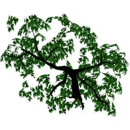
Photshop では、次の指示の通りにしてください。- 白（木ではないもの）をすべて選択し削除します
- イメージの彩度を減らします。します
- 木の葉が木の皮を被っている上にソリッドブラックで色を塗ります * (これによって、幹がシャドウを投影しているところにソリッド シャドウが作成されます）
- イメージにガウスのぼかしを適用します
- シャドウ レイヤーの後ろにグレイのレイヤー（RGB値：127、127、127）を作成します
- 保存し、テクスチャを Unreal Ed にインポートします
 次に、この新しいテクスチャのために、かすかな振動を与える TexOscillator を作成します。 UOscillationType は、OT_Stretch にセットし、幹のシャドウが、静的メッシュ の幹と整列したままになるように注意してください。
次に、この新しいテクスチャのために、かすかな振動を与える TexOscillator を作成します。 UOscillationType は、OT_Stretch にセットし、幹のシャドウが、静的メッシュ の幹と整列したままになるように注意してください。
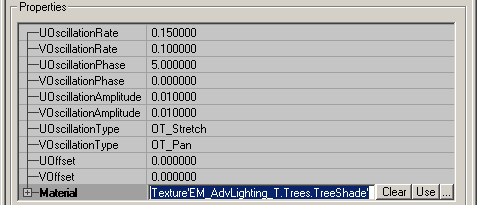
次に、太陽光線の方向に投影しているプロジェクタに、 TexOscillator を割り当て、MaxTraceDistance（最大トレース距離）をそれに応じてセットし、FOV（視野）を 1 にセットして光源からきわめて離れているようにシミュレートします。森の林冠のシャドウ
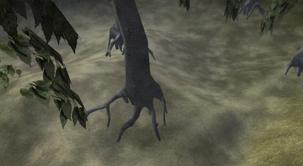
森のシャドウのプロセスは、一本の木のシャドウと比べてそれほど大きく異なりません。ただ、森の林冠のシャドウでは、急なエッジのないタイリング可能なシャドウ テクスチャが必要です。そのようなテクスチャを作成するには、次のステップの通りにしてください。- パースペクティブ ビューポートのテレインのスイッチをオフにします
- ビューポートのモードを BSP カットにセットします
- 森の木々の上にカメラの方向を定め、2 倍の倍率のサイズのイメージにスクリーンショットを捉えます
- 白（木ではないもの）をすべて選択し削除します
- フォトショップのイメージの彩度を減らします
- イメージにガウスのぼかしを適用します
- グレイの２つのレイヤーを作成します（RGB値：127、127、127)
- シャドウ レイヤーの上に50%の不透明度で一つのレイヤーをセットします
- もう一つのレイヤーは、100%の不透明度のままにし、シャドウ レイヤーの後ろにセットします
- 次に、エッジの周りに、中央にブレンドする 127、127、127 のグレイの縁を作成します
- これで、エッジの継ぎ目が余り目立たなくなります。
- 保存し、テクスチャを Unreal Ed にインポートします
 さて次は、プロジェクタ テクスチャとしてセットするときにイメージがタイリングするように、 TexScaler を使用する必要があります。プロジェクタを二重にする明らかなタイリング パターンがありますが、パターンをわずかに最初のパターンからずらすことで、これは解決します。しかし、２つのプロジェクタの周囲にはかなり明らかなエッジがまだあります。これをマスクするために、一本の木( 上記の通り)のシャドウを投影する別のプロジェクタを作成し、森の林冠のシャドウの継ぎ目をマスクするために森の周囲に沿って要所要所に木を配置します。
さて次は、プロジェクタ テクスチャとしてセットするときにイメージがタイリングするように、 TexScaler を使用する必要があります。プロジェクタを二重にする明らかなタイリング パターンがありますが、パターンをわずかに最初のパターンからずらすことで、これは解決します。しかし、２つのプロジェクタの周囲にはかなり明らかなエッジがまだあります。これをマスクするために、一本の木( 上記の通り)のシャドウを投影する別のプロジェクタを作成し、森の林冠のシャドウの継ぎ目をマスクするために森の周囲に沿って要所要所に木を配置します。
グラウンド フォグ
注：グラウンド フォグ プロジェクタは、古いビルドでは、ちらつくことがあります。 シングル プロジェクタと TexRotator マテリアルを使用して、大きなエリアに対して説得力のあるグラウンド フォグ効果を手早く作成できます。ベース テクスチャについては、いくらかの変化を中央に持たせて、エッジの方へフェードアウトするようにしてテクスチャを作成し、黒の大きな余地を残します。これが、この例で使用されるテクスチャです。
シングル プロジェクタと TexRotator マテリアルを使用して、大きなエリアに対して説得力のあるグラウンド フォグ効果を手早く作成できます。ベース テクスチャについては、いくらかの変化を中央に持たせて、エッジの方へフェードアウトするようにしてテクスチャを作成し、黒の大きな余地を残します。これが、この例で使用されるテクスチャです。
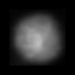
次に、TexRotationType をTR_ConstantlyRotating にし、微妙な回転のための Yaw Rotation（横揺れ回転）を 1000 にして、TexRotator を作成します。それから、U と V のオフセットを使用して、イメージ（ベース テクスチャの半分の大きさ）の中央の周りに回転をセンタリングします。
プロジェクタのプロパティについては、次のようにセットできます。
- プロジェクタ -
-
bClipStaticMesh:Trueである場合、プロジェクタが、グラウンド フォグから突き出ているメッシュの一番下の部分にのみ投影する原因になります。グラウンド フォグから突き出ている BSP がある場合は、=bClipBSP= をTrueにセットできます。 -
bGradient:Trueである場合、グラウンド フォグのエッジに向けて、投影が優美にフェードアウトすることが可能になります。 -
FOV: 変化します
-
-
-
FrameBufferBlendingOPおよびMaterialBelndingOp:PB Addテクスチャは、黒色を透過するものとして使用するように作られているため、両方のブレンディング Op を、追加のためにセットする必要があります。 -
MaxTraceDistance: 変化します これは、グラウンド フォグの深さをどれくらいにしたいかによります。測定する良い方法は、プロジェクタを希望する高さにセットし、次に、グラウンド フォグがテレイン/グラウンド サーフェスを通過するまで、MaxTraceDistanceを増加することです。また、=MaxTraceDistance= をさらに増加することによって、グラウンド フォグをより暗く見せることができます。
-
波状の雲
この効果は、プロジェクタと２つのマテリアル修飾、TexPanner と TexScalerを組み合わせたものです。まず、ベース テクスチャをセットアップします。SkyZone から雲のテクスチャを取り、グレイ スケールのイメージになるようにそのイメージの彩度を減らします。します。脱飽和した雲のイメージを Unreal Ed にインポートし戻した後、TexPanner（これは、脱飽和した雲のイメージを使用した空の雲に対して使用している TexPanner と同一である必要があります）を作成します。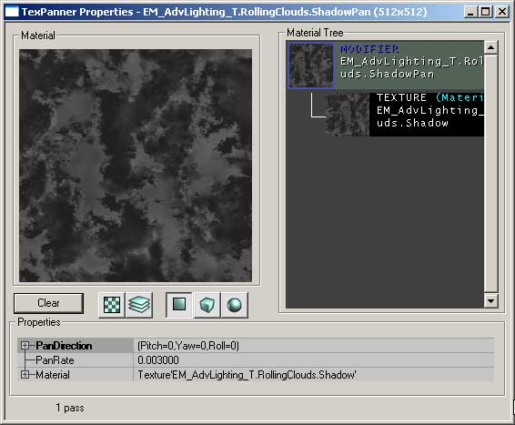
次に、より信頼性のあるシャドウ サイズに作成するために、TexScaler を TexPanner に適用します。結果として生じるマテリアルは、次のように見えます。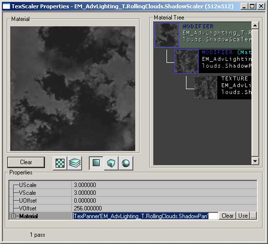
これでプロジェクタをセットアップする準備ができました。新規に作成した TexScaler にProjTexture をセットし、=FOV= を 1 にセットして、プロジェクタをレベルの上に配置します。次に DrawScale および MaxTraceDistance を、錐台がレベル全体を含むまで増加します。例のマップでは、プロジェクタは、太陽光線と同じ方向にシャドウを投影するようにセットされています。小さなタッチですが、遮られた太陽光線からすでにシャドウを受けているサーフェスにシャドウが投影されるのを防ぎます。素早く正確に方向付けの複製をするために、太陽光線の Movement （動作）プロパティから回転設定をコピー アンド
ペーストできます。
揺れるたいまつの明かり
 揺れるたいまつの効果を作成するには、ライトと TexOscillator マテリアルを伴ったシングル プロジェクタが必要です。ライトは、炎の明かりと炎の色を投影するためのものです。プロジェクタは、壁に投影された明かりに揺れる動きを適用します。
ライトをセットアップするためには、レベルにライトを追加します。光源か、もしくは壁の直ぐ隣である場合は少し離れた場所で追加します。次に、
揺れるたいまつの効果を作成するには、ライトと TexOscillator マテリアルを伴ったシングル プロジェクタが必要です。ライトは、炎の明かりと炎の色を投影するためのものです。プロジェクタは、壁に投影された明かりに揺れる動きを適用します。
ライトをセットアップするためには、レベルにライトを追加します。光源か、もしくは壁の直ぐ隣である場合は少し離れた場所で追加します。次に、 LightColor
プロパティを使用して、ライトに適当な色を割り当て、正しく見えるようになるまで輝度を微調整します。
 プロジェクタのセットアップに移る前に、次のように見えるプロジェクタのためのテクスチャをまず作成する必要があります。
プロジェクタのセットアップに移る前に、次のように見えるプロジェクタのためのテクスチャをまず作成する必要があります。
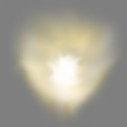
テクスチャを通じて微妙な変化があり、明滅の効果が投影の中心でも明らかになるようにすることが大切です。また、Modulate（変調）ブレンディング タイプを使用するため、テクスチャのエッジと背景を 127、127、127 グレイに維持します。テクスチャ用の明滅効果を作成するためには、TexOscillator マテリアルを作成する必要があります。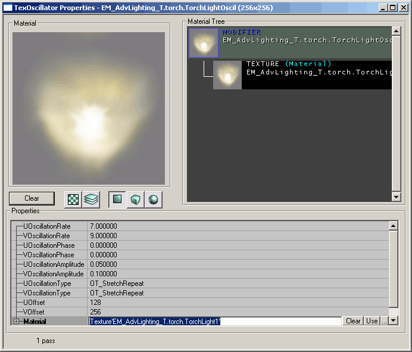
この TexOscillator のために、異なる U および V のOscillationAmplitudes=（振動幅）と同様に、 異なる U および V の =OscillationRates=（振動率）をセットして、明滅のためによりランダムな外観を作成します。両方の =OscillationTypes について、 OT_StretchRepeat にセットします。最後のタッチで、U 方向に半分、V
方向に完全に 256 （256x256 のテクスチャ）をオフセットします。このため、=StretchRepeat= は、この例でたいまつの明かりの離れたエッジとして使用されているテクスチャの上で誇張されます。
では、TexOscillator を新しいプロジェクタの ProjTexture に割り当てましょう。プロパティを次のように設定します。
- 表示 -
-
DrawScale: 変化します この例では、0.25 の DrawScale を使用して、プロジェクタをより扱いやすく、フロアに投影することなしに一つの特定のエリアに直接向けられます。
-
- プロジェクタ -
-
bClipBSPおよびbClipStaticMesh:真これにより、BPSおよび 静的メッシュ ジオメトリでのタイリングを投影がしないようにします。 -
bGradient:Trueこれを偽に設定すると、明滅の効果が増幅され、投影に鋭いエッジが作成されますが、炎の明滅は、光源からの距離とともにフェードアウトする微妙な効果である必要があります。 -
FOV:100この設定で再生を希望されるかも知れませんが、炎の源から投影されているように見えるように、炎の投影を変形することが役に立ちます。 -
FrameBufferBlendingOP:PB_Modulate壁に対するProjTextureを変調し、以前にセットアップした色の付いたライトから壁に放たれた光を変調するので、これはデフォルト設定のままにする必要があります。 -
MaxTraceDistance: 変化します プロジェクタは、MaxTraceDistance をセットしようとしている何ものによっても遮断されないため、たいまつで照らされているサーフェスの反対側の何ものにも投影しません。
-
ProjTexture の明るい部分をセンタリングして、プロジェクタをフロアの近くに配置します。これにより、プロジェクタは、天井と同様にたいまつの背後の壁に光を放ちます。
この効果を向上させるために、逆の ProjTexture を持つ別の同じようなプロジェクタを作成し、たいまつのシャドウを作成するためにフロアに向けて投影することができます。
侵食
水面下
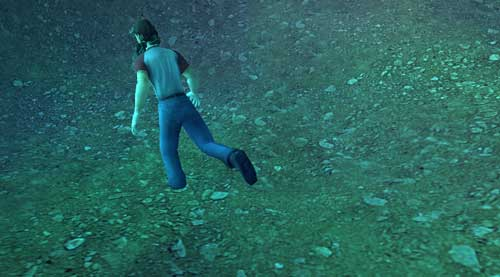
作業の大部分は、説得力のある水の侵食 シェーダーを作成することです。侵食テクスチャを作成するための方法はたくさんあります。自由にご自分のやり方で行っていただいて結構ですが、この例のマップでコースティックを作成するために使用する方法は、以下で説明されます。 まず、水に反射した光のイメージから始めます。 このテクスチャは、様々に着色されたガラスのテクスチャ フィルターの数個のレイヤーを一緒にブレンドして素早く作成され、タイリング可能になります。テクスチャのためのアルファ チャンネルを持っていないことが重要です。というのは、後で使用することになるコンバイナ マテリアルと適切にブレンドしないからです。
いったん Unreal Ed にインポートしたら、このテクスチャに数個の異なるシェーダーの基礎を置くことになります。各マテリアルに対する設定に続いて（作成した順序で）、最終マテリアルのテクスチャ ブラウザ マテリアル ツリーが見えます。
このテクスチャは、様々に着色されたガラスのテクスチャ フィルターの数個のレイヤーを一緒にブレンドして素早く作成され、タイリング可能になります。テクスチャのためのアルファ チャンネルを持っていないことが重要です。というのは、後で使用することになるコンバイナ マテリアルと適切にブレンドしないからです。
いったん Unreal Ed にインポートしたら、このテクスチャに数個の異なるシェーダーの基礎を置くことになります。各マテリアルに対する設定に続いて（作成した順序で）、最終マテリアルのテクスチャ ブラウザ マテリアル ツリーが見えます。
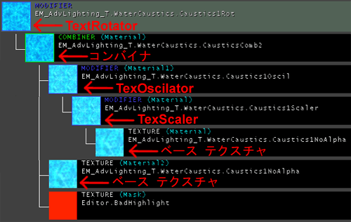
TexScaler: U および V の両方のスケールを 0.5 にセットし、ベース テクスチャの大きさを 2 倍にします。水面下のエリアの大きさによりこの値を増加したり、減少したりできます。 TexOscillator: U および V のOscillationRates をそれぞれ 0.2 と 0.3 にセットし、U および V の OscillationApplitudes をそれぞれ 0.01 と0.02 にセットします。U および V の 両方向の OscillationType は、=OT_Stretch= です。これによって、TexScaler に適用される、微妙で不規則な波の動きが作成されます。
*Combiner:*（コンバイナ）マテリアル 1 の TexOscillator とマテリアル 2 のベース テクスチャについて、 CombineOperation を CO_Multiply にすると、より大きな深さの感覚が作成されます。
TexRotator" TexRotationType が、=TR_ConstantlyRotating= にセットされ、Yaw（横揺れ） = 512の回転を与えられます。この最終修飾マテリアルによって、流れる水を反射、屈折させながら、水が絶えず流れているように見せている、結果として生じるテクスチャに対する動きの感覚が作成されます。
繰り返します。これは、説得力のあるコースティック効果を作成するための唯一の方法ではありません。異なるマテリアルを異なる方法で使用しても求める効果を作成できます。試しにやってみて、自分自身のやり方で得られるものを確かめてみてください。
コースティック シェーダーを作成し終わったら、それをプロジェクタに適用できます。水面下のエリアが一つの大きな四角の投影によって容易にカバーされない限り、いくつかのプロジェクタが必要になるのが普通です。プロジェクタを水面下のエリア全体の下に配置して、上を向けたいと思われるでしょう。以下に、変更したいと思われそうな設定のリストが、理由に応じた説明付きであります。
- 表示 -
-
DrawScale: 変化します これは、投影の大きさに基づいて変化します。水面下のエリア全体を含むようにセットします。
-
- プロジェクタ -
-
bGradient:Trueこれにより、コースティック効果が、水のエッジに向けて徐々にフェードアウトし、テレインの三角形に沿った鋭い継ぎ目が避けられます。 -
bProjectOnBackfaces:Tureプロジェクタをテレインの下で上を向けて配置しているので、プロジェクタがテレインの上に現れるようにこれを
-
-
-
FOV:1この投影は、広いFOVを使用して変形してはいけないため、1 にセットして、著しい変形なしに投影します。 -
FrameBufferBlendingOP:PB_Modulateこれにより、テレインのサーフェス上のプロジェクタの色が増加し、プロジェクタのどのような色の値も
-
-
-
MaxTraceDistance: 変化します この値は、水面下のエリアの大きさにもよります。プロジェクタを水面下のエリアの最も低いポイントよりも下に配置した後、プロジェクタが、WaterVolume（水容積） の表面に向けて上の方に投影するように、MaxTraceDistanceをセットします。
-
水上
 ほとんど同一のシェーダーと非常に似たプロジェクタ設定を使用しているので、侵食効果は、水上にある可能性のあるジオメトリ（橋など）の下側に適用することができます。
橋の下側のスペースをカバーするには、大きなプロジェクタは必要ないので、TexScaler は、プロジェクタからよりディテールを得るために、さらにテクスチャの大きさを減らすようにする必要があります(U および V のスケールは .375 にセットされています)。このシェーダーの他のすべてのプロパティは、上記のシェーダーと同一です。
上の水の浸食用プロジェクタのプロパティは、下の水の浸食用プロジェクタのプロパティにも非常に似ています。いくぶん複雑な 静的メッシュ に投影する微妙さのため、適正な効果を実現するために変更する必要がある設定があります。例えば、
ほとんど同一のシェーダーと非常に似たプロジェクタ設定を使用しているので、侵食効果は、水上にある可能性のあるジオメトリ（橋など）の下側に適用することができます。
橋の下側のスペースをカバーするには、大きなプロジェクタは必要ないので、TexScaler は、プロジェクタからよりディテールを得るために、さらにテクスチャの大きさを減らすようにする必要があります(U および V のスケールは .375 にセットされています)。このシェーダーの他のすべてのプロパティは、上記のシェーダーと同一です。
上の水の浸食用プロジェクタのプロパティは、下の水の浸食用プロジェクタのプロパティにも非常に似ています。いくぶん複雑な 静的メッシュ に投影する微妙さのため、適正な効果を実現するために変更する必要がある設定があります。例えば、 bProjectOnBackfaces は、コースティックが橋を通り抜けて投影し、上側に現れないように、[False] のままにする必要があります。以下に、水面下のプロジェクタから変更したいと思われる設定のリストが、理由に関する説明付きであります。
- 表示 -
-
DrawScale:1この設定は、デフォルト設定の 1 のままにする必要があります。FOV を使用して、プロジェクトが適正な大きさの投影を放つようにすることができます。
-
- プロジェクタ -
-
bGradient:Falseプロジェクトが橋の下側全体に均等に投影するようにしたいのであれば、この設定をデフォルト値の偽のままにすることができます。もし、 =True=にセットした場合は、投影がすべての部分に均等に現れないことがあります。 -
bProjectOnBackfaces:偽前述のように、メッシュの上側への投影を避けるために、これはデフォルト設定のままにする必要があります。 -
FOV: 変化します 露出したメッシュの下側にのみ表示するように設定をアレンジします。FOV が余りに大きいと、プロジェクタが、橋の上側の下向きの三角形に投影する原因になることがあります。 -
MaxTraceDistance: 変化します この値は、投影するメッシュの大きさにもよります。FOV設定と関連してこの値をアレンジできます。余り遠くにセットしないように注意してください。そうしないと、静的メッシュの上側に投影する結果になります。
-
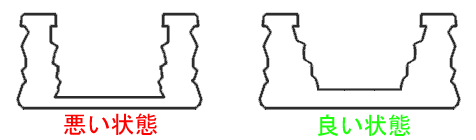
右の橋の方がよく機能します。というのは、右の橋は厚みがより大きく、内部の壁に傾斜がついているため、内部のすべて上の部分が壁の底の方に向いているからです。また、橋がまっすぐで、アーチ型でない場合は、それに応じて大変容易に MaxTraceDistance をセットでき、したがって橋の上を超えて投影しません。ただし、アーチ型の橋が求められるケースもあります。プロジェクタ + エミッタ
窓を通過するライト ビーム
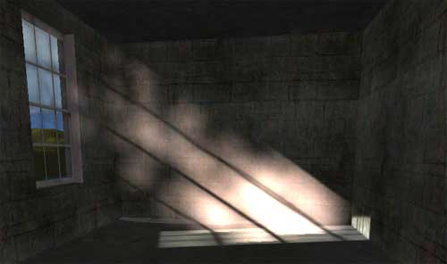
窓からの太陽光線は、フォグとダストのパーティクル システムと組み合わせて、プロジェクタを使用して作成できます。一貫性を保つために、プロジェクタの角度が太陽光線の角度に一致していることを確認する必要があります。Sun Light（太陽光線）プロパティの Movement (動作）タブから Rotation（回転）フィールドの Pitch Roll(縦揺れ）および Yaw（横揺れ）値を、プロジェクタ プロパティにコピーアンドペーストすることによって、簡単に確認できます。 ウィンドウをセットアップしたら、プロジェクタを配置し、セットアップできます。プロジェクタ テクスチャを作成するために、ウィンドウ フレーム用にテクスチャを取り、フォトショップでイメージの彩度を落とし、新しいテクスチャとしてインポートします。また、このプロジェクタ テクスチャは、UClampMode および VClampMode を TC_Clamp にする必要があります。
 プロジェクタ テクスチャが四角い場合は、テクスチャは四角を表示することを覚えておいてください。こうするためには、四角いテクスチャを作る必要があります。フォトショップのプロジェクタ テクスチャの短いエッジの周りの黒いスペースをいくらか追加します。そうすると四角いテクスチャを投影します。
その他のプロジェクタ プロパティについては、次のプロパティを変更する必要があるだけです。
プロジェクタ テクスチャが四角い場合は、テクスチャは四角を表示することを覚えておいてください。こうするためには、四角いテクスチャを作る必要があります。フォトショップのプロジェクタ テクスチャの短いエッジの周りの黒いスペースをいくらか追加します。そうすると四角いテクスチャを投影します。
その他のプロジェクタ プロパティについては、次のプロパティを変更する必要があるだけです。
-
- プロジェクタ -
-
FOV:1 -
FrameBufferBlendingOp: _=PB_Add= -
MaterialBlendingOp:PB_Modulate
MaxTraceDistance も減少します。
ライト ビーム効果を完了するために、プロジェクタを通過するパーティクル システムが必要です。この例のマップでは、フォグとダストのエミッタの付いたパーティクル システムが使用されています。レベルに複数のプロジェクタがある場合、２つのプロジェクタを通過するパーティクル システムはないことに注意してください。現在、パーティクル システムは、２つの異なるプロジェクタの錐台を通過すると消えてしまいます。
注：２つのプロジェクタが、オーバーラップせずに、同じパーティクル システムに投影する場合、この効果は消えてしまうことがあります。これは、2110
ビルドのプロジェクタに関連したエミッタについての既知のバグです。
メッシュ効果
木の林冠のライト ビーム
 このセクションでは、静的メッシュのみを使用して森の林冠を流れ落ちるライト ビームを作成する方法が示されます。まず、３つのプレーンを以下のように一緒にしただけの静的メッシュが必要です。
このセクションでは、静的メッシュのみを使用して森の林冠を流れ落ちるライト ビームを作成する方法が示されます。まず、３つのプレーンを以下のように一緒にしただけの静的メッシュが必要です。
 次に、アルファ チャネルを使用して２つのテクスチャを作成します。一つは長いビーム セクションのために、もう一つは、ビームをまっすぐ見上げたときに明るいスポットとして現れる上部のために使用します。
次に、アルファ チャネルを使用して２つのテクスチャを作成します。一つは長いビーム セクションのために、もう一つは、ビームをまっすぐ見上げたときに明るいスポットとして現れる上部のために使用します。
 %IMAGE{src="rsrc/Two/ExampleMapsAdvLightingJP/beamtexture2.gif"
alt="beamtexture2.gif" width="128" height="256"}%
次に、ライト ビーム 静的メッシュ のプロパティをセットする必要があります。衝突プロパティがすべて [偽] に、=bShadowCast= が
%IMAGE{src="rsrc/Two/ExampleMapsAdvLightingJP/beamtexture2.gif"
alt="beamtexture2.gif" width="128" height="256"}%
次に、ライト ビーム 静的メッシュ のプロパティをセットする必要があります。衝突プロパティがすべて [偽] に、=bShadowCast= が False に、そして bAcceptsProjectors が False にセットされていることを確認してください。
最後に、ライト ビームを方向付けて、太陽光線と同じ回転を持ち、ビームの上部が四角いプレーンになるようにします。回転プロパティは、Movement（動作）ロールアウトで見つけることができます。次に、天蓋の穴に配置して、それに応じてサイズ変更します。
ネオン ライト
ネオン ライト効果の作成はかなり簡単です。静的メッシュ、いくぶんファジーなイメージの 静的メッシュ を投影するプロジェクタ、そして一連のライトが必要です。ネオン ライトの色は、光の及ぶ範囲が比較的小さなものにします。
静的メッシュについては、メッシュのライト部分を一体色にセットする必要があります。表示プロパティで、 bUnlit を 真 にセットします。
プロジェクタについては、次のようにプロパティをセットします。
- プロジェクタ -
-
FOV:1 -
MaxTraceDistance:32または、ネオン ライトの 静的メッシュ のデプスよりも大きくします。 -
FrameBufferBlendingOP:PB_Addこれは、投影するテクスチャでは黒色が透過することを意味します。
-
 最後に、一連のライトを、
最後に、一連のライトを、 LightRadius を短く、 LightBrightness を小さくして(この例のマップでは、それぞれ 8 および 16) 追加します。これらのライトは、看板をライトアップしたり、背後にある表面をライトアップするほどのものではなく、近くにあるものや通過するものに対してネオンの明かりを放射するものです。
回転する注意灯
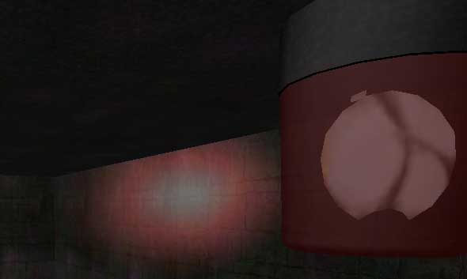
動くプロジェクタを作成するためには、プロジェクタをムーバーに添付します。この例では、プロジェクタとムーバーのある回転する注意灯を作成する方法が示されます。 注意灯の 静的メッシュ部分については、３つのピースに分けられます。回転するリフレクタ、赤いシェード、そしてライトとベースです。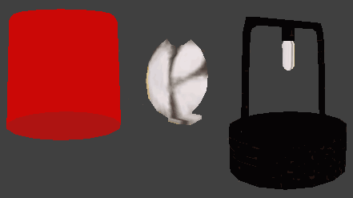
３つの部分に分けるのには２つの理由があります。一つ目は、回転するリフレクタをムーバーとして別々に配置できるからです。２つ目は、異なるピースとして配置することによって、Unreal Ed でマニュアル操作で描画順序をコントロールできるからです（オブジェクトはすべて互いに非常に接近しているため、何を最初に描画して最後に何を描画するかをレンダーが決めるのが困難です）。 リフレクタをムーバーとして使用して、レベルに３つのピースをセットアップし、次にメッシュを右クリックして、Order（順序）オプションから適切な設定を選択し、描画順序を調整します。リフレクタ ムーバーについては、次のプロパティをセットできます。
リフレクタをムーバーとして使用して、レベルに３つのピースをセットアップし、次にメッシュを右クリックして、Order（順序）オプションから適切な設定を選択し、描画順序を調整します。リフレクタ ムーバーについては、次のプロパティをセットできます。 - 表示 -
-
bAcceptsProjectors:偽
-
- イベント -
-
Tag: NameOfYourMover
-
- 動作 -
-
bFixedRotation:真 -
RotationRate: YourRotationSpeed (この例では、8192)
-
- 表示 -
-
DrawScale: SetAccordinly 投影は、半透明の外殻の内部にフィットする必要があります。
-
- 動作 -
-
AttachTag: NameOfYourMover
-
- プロジェクタ -
-
bClipBSP:Trueこれにより、プロジェクタが BSP上でタイリングするのが防止されます。 -
bClipStaticMesh:Tureこれにより、プロジェクタが、静的メッシュ を横断してタイリングするのが防止されます。 -
bGradient:Ture投影が、遠くになるにつれてフェードアウトします。 -
bProjectOnAlpha:TureもしFalseであると、投影が、半透明の外殻の上に非常に粗くなり、また、アルファ レイヤーのある他のどのようなテクスチャ上にも十分に現れません。 -
bProjectOnBackFaces:Trueこれによって、注意灯の半透明の覆いがライトアップされます。 -
FOV:25この数字は、レベルの設計者次第ですが、フロアを通り抜けての投影に対するプロジェクタの限界としては、25 が選ばれます。 -
FrameBufferBlendingOP:PB_Add（これによって、投影が、黒色を透過するものとして投影することを覚えておいてください） -
MaxTraceDistance: 変化する可能性があります レベルに応じてセットしてください。
-
シャドウを投影する蛾
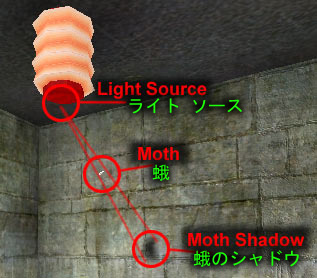
よりダイナミックなライティング効果の中には、追加コードを書く必要があることがあります。この効果によって、ライトの周りを飛ぶ蛾の動作を追跡するダイナミック シャドウが作成されます。以下に、プログラマがどのようにセットアップすることができるかを示した、UDNの技術セクションにある文書へのリンクがあります。 蛾のシャドウスペシャル プロジェクタ
プログラマによって、スペシャル プロジェクタを追加することも、希望次第で可能です。この例では、UDNContent コードに追加された FluorescentLight（蛍光灯）プロジェクタが示されています。この TriggerLight（トリガ ライト）をビルドへ追加するには、「UDNContent.dll」および 「UDNContent.u」ファイルをシステム フォルダにコピーします。これらのファイルを ここに ダウンロードできます。新しいクラスについて、本書で説明されています。トリガ可能な FluorescentLight（蛍光灯）プロジェクタ
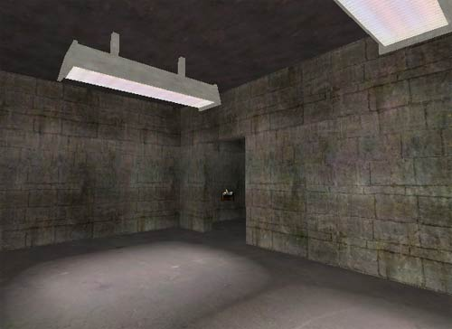
FluorescentLight（蛍光灯）プロジェクタは、セットされたレートでランダムに明滅するライトとテクスチャを投影し、トリガされるとセットされた時間の後は固定されます。このタイプのプロジェクタをセットアップするには、その他のどのようなプロジェクタとも同じように、プロジェクタ プロパティをセットアップする必要がありますが、プロパティ ウィンドウに、２つの通常のライト プロパティ タブ(LightColor（ライト カラー）および Lighting(ライティング)）に加えて、FluorescentLight（蛍光灯）タブが必要になります。 FluorescentLight（蛍光灯）プロジェクタのライト コンポネントは、bDymanicLight にセットされているため、ライトは、ジオメトリを通って放射し、当たってはならないサーフェスに当たることに注意してください。しかし、 bDymanicLight がないと、FluorescentLight（蛍光灯）プロジェクタのライト部分が機能しません。
例のマップの蛍光灯は、次のようにセットアップされます。まず第一に、MaterialSwith（マテリアル スイッチ）マテリアルおよび MaterialSwitchTrigger(マテリアル スイッチ トリガ）をライト テクスチャに対して作成します。このために、２つのテクスチャをインポートします。一つはライトオン用に、もう一つはライトオフ用です。
 %IMAGE{src="rsrc/Two/ExampleMapsAdvLightingJP/fluorescent_off.jpg"
alt="fluorescent_off.jpg" width="128" height="256"}%
次に、New Material MaterialClasses （新マテリアルマテリアルクラス）ウィンドウから MaterialSwith（マテリアル スイッチ）マテリアルを作成します。MaterialSwith（マテリアル スイッチ）マテリアルのプロパティを開けて、オンとオフのテクスチャを最初の２つのマテリアル スロットに割り当てます。
%IMAGE{src="rsrc/Two/ExampleMapsAdvLightingJP/fluorescent_off.jpg"
alt="fluorescent_off.jpg" width="128" height="256"}%
次に、New Material MaterialClasses （新マテリアルマテリアルクラス）ウィンドウから MaterialSwith（マテリアル スイッチ）マテリアルを作成します。MaterialSwith（マテリアル スイッチ）マテリアルのプロパティを開けて、オンとオフのテクスチャを最初の２つのマテリアル スロットに割り当てます。
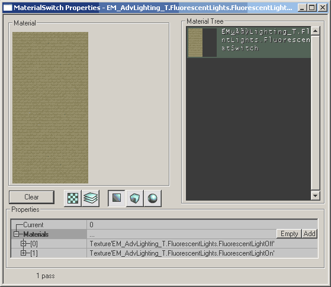
次に、２つのタイプのトリガ、正規のトリガと MaterialSwitchTrigger(マテリアル スイッチ トリガ）を配置する必要があります。MaterialSwitchTrigger(マテリアル スイッチ トリガ）は、MaterialSwitch（マテリアル スイッチ）マテリアルをトリガしますが、それ自体ではトリガされません。したがって、正規のトリガが、MaterialSwitchTrigger(マテリアル スイッチ トリガ）をトリガするために必要になります。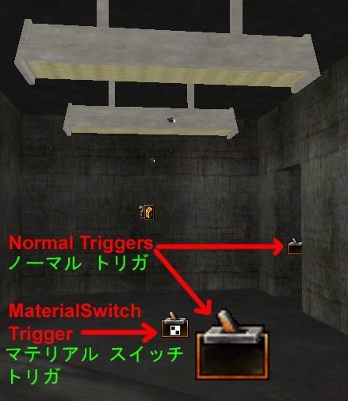
例のマップでは、２つの別個の正規のトリガが、両方の蛍光灯の上にある MaterialSwitch（マテリアル スイッチ）マテリアルを切り替える MaterialSwitchTrigger（マテリアル スイッチ トリガ）をアクティブにします。これらの２つの標準のトリガは、ゲーム中に見え易いように、bHidden Falseにセットします。 もしプログラマが、独自のプロジェクタ ライトを作成したいときは、 本書の技術版のFluorescentLight Projector（蛍光灯プロジェクタ）の作成の仕方ここをクリック を参照してください。